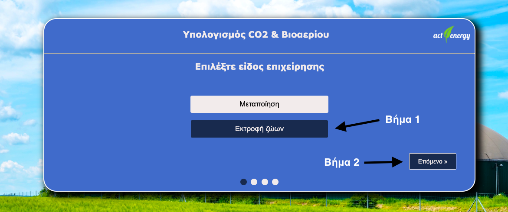
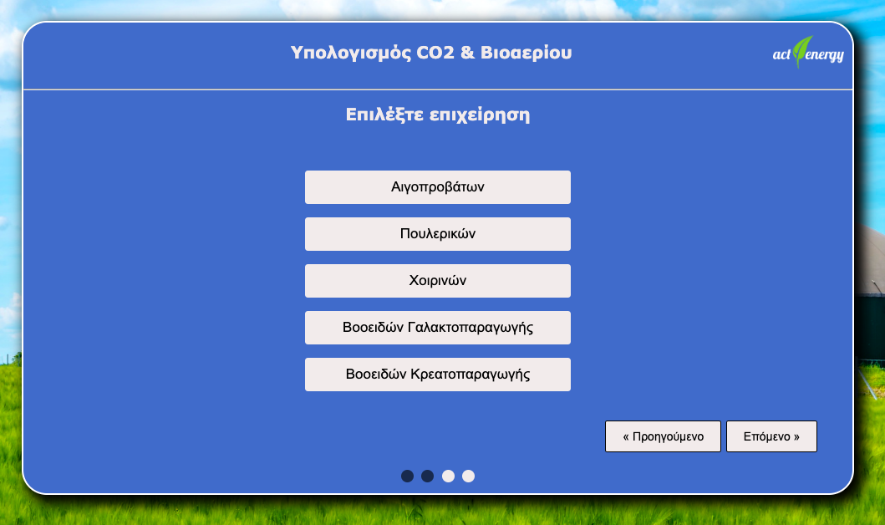
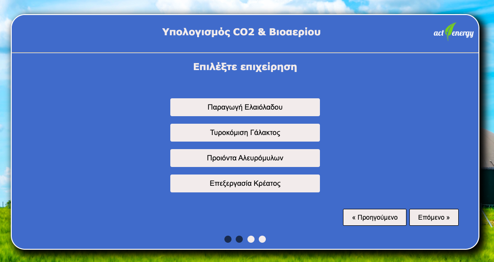
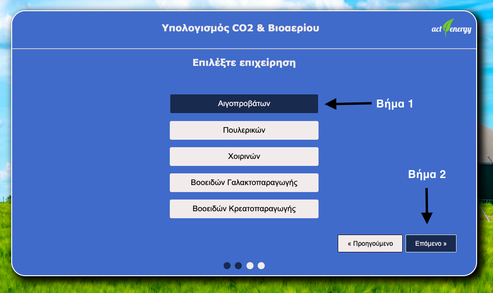
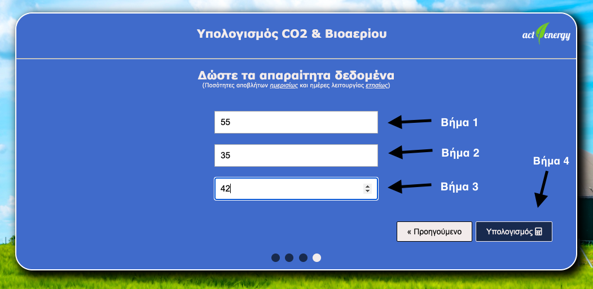
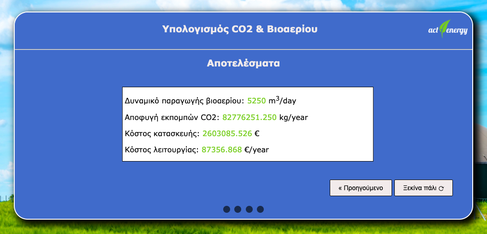

Στο 1ο βήμα της εφαρμογής ο χρήστης επιλέγει το είδος της επιχείρησης που τον ενδιαφέρει.
Διατίθενται δύο κεντρικές επιλογές.
Η πρώτη αφορά τις μεταποιητικές επιχειρήσεις
και η δεύτερη τις επιχειρήσεις εκτροφής ζώων.
Έστω ότι ο χρήστης επιλέξει το είδος επιχείρησης "Εκτροφή ζώων":
Μετά την επιλογή του ο χρήστης μεταφέρεται στο δεύτερο βήμα της φόρμας στο οποίο καλείται να επιλέξει την επιχείρηση εκτροφής ζώων που τον ενδιαφέρει(πχ πουλερικά, χοιρινά, βοοειδή, κλπ):
Αν ο χρήστης αλλάξει γνώμη και θελήσει να γυρίσει πίσω και να επιλέξει διαφορετικό είδος επιχείρησης, αυτό μπορεί να το πετύχει κάνοντας κλικ στο κουμπί "Προηγούμενο". Σε αυτήν την περίπτωση θα έχει να επιλέξει μεταξύ διαφορετικών ειδών μεταποιητικών επιχειρήσεων (πχ παραγωγή ελαιολάδου, τυροκόμιση γάλακτος, κλπ):
Εστω ότι ο χρήστης επιλέξει την επιχείρηση εκτροφής Αιγοπροβάτων:
Μετά την
επιλογή του ο χρήστης μεταφέρεται στο τρίτο βήμα της φόρμας στο οποίο καλείται να
συμπληρώσει τα παρακάτω δεδομένα:
(α) Αριθμός εκτρεφόμενων ζώων
(β) Παραγόμενες
ποσότητες αποβλήτων
(γ) Ημέρες λειτουργίας της επιχείρησης.
Εστω ότι ο χρήστης συμπλήρωσει πως έχει 66 Αιγοπρόβατα απ'τα οποία παράγονται ημερησίως 55 m3 ποσότητες αποβλήτων και η επιχείρηση αυτή λειτούργησε για 42 ημέρες:
Αφού ο χρήστης πατήσει το κουμπί του υπολογισμού για τα δεδομένα που έδωσε τότε μεταφέρεται στο 4ο βήμα της φόρμας στο οποίο μπορεί να δει τα αποτελέσματα βάση των επιλογών που έκανε. Αν ο χρήστης επιθυμεί να ξαναρχίσει από την αρχή την συμπλήρωση της φόρμας τότε μπορεί να πατήσει το κουμπί "Ξεκίνα πάλι"
Υπολογισμός δυναμικού παραγωγής βιοαερίου
Το δυναμικό παραγωγής βιοαερίου για τα εξεταζόμενα απόβλητα υπολογίζεται από την
παρακάτω εξίσωση:
QBG-d = (QW-d * YBG)/W
Όπου
QBG-d = η ημερήσια παραγωγή βιοαερίου (m3 biogas/day) (το υπολογίζει η εφαρμογή)
QW-d = η ημερήσια ποσότητα αποβλήτων (m3 waste/day) (το συμπληρώνει ο χρήστης)
Y BG/W = ο συντελεστής ανάκτησης βιοαερίου των εξεταζόμενων αποβλήτων (m3 biogas / m3 waste) (το επιλέγει η εφαρμογή)
Για την περίπτωση του συντελεστής ανάκτησης βιοαερίου (Y BG/W ) η εφαρμογή λαμβάνει
υπόψη τα παρακάτω δεδομένα:
Προέλευση αποβλήτου -> Συντελεστής ανάκτησης βιοαερίου
Κτηνοτροφικά
Αιγοπρόβατα -> 150 m3/tn αποβλήτου
Πουλερικά -> 200 m3/tn αποβλήτου
Χοιρινά -> 6 m3/m3 αποβλήτου
Βοοειδή γαλακτο-παραγωγής -> 20 m3/m3 αποβλήτου
Βοοειδή κρεατο-παραγωγής -> 50 m3/tn αποβλήτου
Μεταποίηση
Ελαιόλαδο 70 m 3 /m 3 αποβλήτου
Τυρί 30 m 3 /m 3 αποβλήτου
Αλεύρι 800 m 3 /tn αποβλήτου
Κρέας 80 m 3 /tn αποβλήτου
Υπολογισμός δυναμικού παραγωγής βιοαερίου
Το δυναμικό παραγωγής βιοαερίου για τα εξεταζόμενα απόβλητα υπολογίζεται από την
παρακάτω εξίσωση:
QBG-d = (QW-d * YBG)/W
Όπου
QBG-d = η ημερήσια παραγωγή βιοαερίου (m3 biogas/day) (το υπολογίζει η εφαρμογή)
QW-d = η ημερήσια ποσότητα αποβλήτων (m3 waste/day) (το συμπληρώνει ο χρήστης)
Y BG/W = ο συντελεστής ανάκτησης βιοαερίου των εξεταζόμενων αποβλήτων (m3 biogas / m3 waste) (το επιλέγει η εφαρμογή)
Για την περίπτωση του συντελεστής ανάκτησης βιοαερίου (Y BG/W ) η εφαρμογή λαμβάνει
υπόψη τα παρακάτω δεδομένα:
Προέλευση αποβλήτου -> Συντελεστής ανάκτησης βιοαερίου
Κτηνοτροφικά
Αιγοπρόβατα -> 150 m3/tn αποβλήτου
Πουλερικά -> 200 m3/tn αποβλήτου
Χοιρινά -> 6 m3/m3 αποβλήτου
Βοοειδή γαλακτο-παραγωγής -> 20 m3/m3 αποβλήτου
Βοοειδή κρεατο-παραγωγής -> 50 m3/tn αποβλήτου
Μεταποίηση
Ελαιόλαδο 70 m 3 /m 3 αποβλήτου
Τυρί 30 m 3 /m 3 αποβλήτου
Αλεύρι 800 m 3 /tn αποβλήτου
Κρέας 80 m 3 /tn αποβλήτου